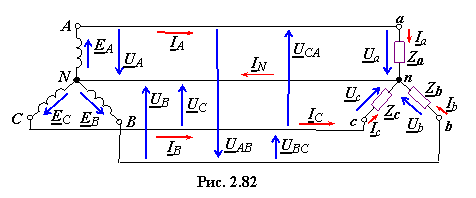
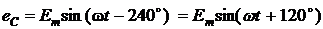
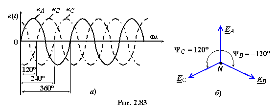

Для упрощения анализа процессов в трёхфазной цепи будем пренебрегать сопротивлениями линейных и нейтрального проводов и считать источники напряжения (рис. 2.82, слева) с ЭДС EA, EB и EC идеальными. Напряжения между линейными проводами называют линейными: UAB, UBC, UCA, а между каждым из
линейных проводов и нейтральным − фазными: UA, UB, UC генератора и Ua, Ub, Uc приёмника (второй индекс N или n опускают). Положительные направления ЭДС, линейных и фазных напряжений и токов в четырёхпроводной схеме звезда−звезда (Y−Y) указаны на рис. 2.82.

При принятых допущениях фазные напряжения трёхфазного приёмника в схеме Y−Y с четырьмя проводами (называемой соединением звезда-звезда с нейтральным (нулевым) проводом)
равны фазным напряжениям генератора, т.е.
Ua = UA, Ub
= UB, Uc = UC,
а так называемое напряжение смещения нейтрали между точками n и N равно нулю (UnN = 0).
В р е м е н н а я и в е к т о р н а я д и а г р а м м ы ЭДС т р ё х ф а з н о г о г е н е р а т о р а. В симметричной трёхфазной системе фазные ЭДС генератора, фазы которого соединены звездой (см. рис. 2.82), равны:
 . (2.143)

Уравнениям (2.143) соответствуют временная и векторная диаграммы фазных ЭДС генератора, представленные на рис. 2.83а, б.